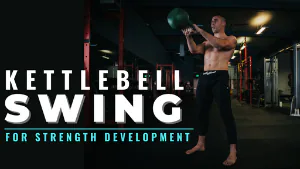

B806 · Strength Bias: How to Use KB Swings for Strength
Hi {first_name},
I could read the script to a movie out loud, but it wouldn’t be good acting. It’s not what you do, but how you do it.
With kettlebell swings, you might be performing the same movement, but you’ll get different results depending on HOW you perform the exercise.
Watch this week's video and find out.

Train intentionally, Mike Salemi |